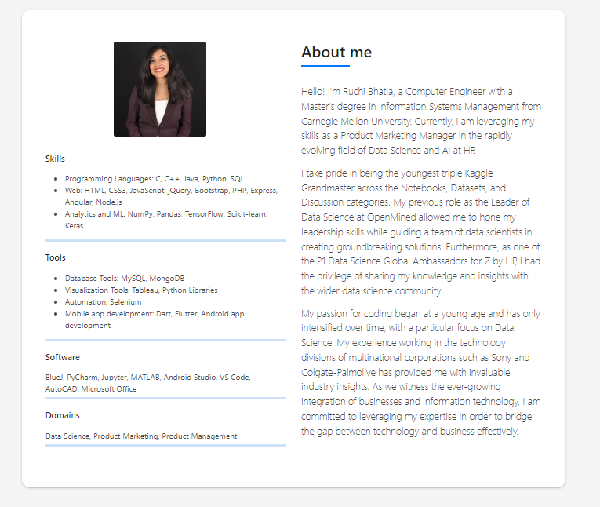

I’m a passionate AI & ML Engineer with experience in building machine learning models and fine-tuning generative AI models like Meta Llama 2. With a strong foundation in Python, AWS services, and reinforcement learning, I thrive on solving complex challenges.
